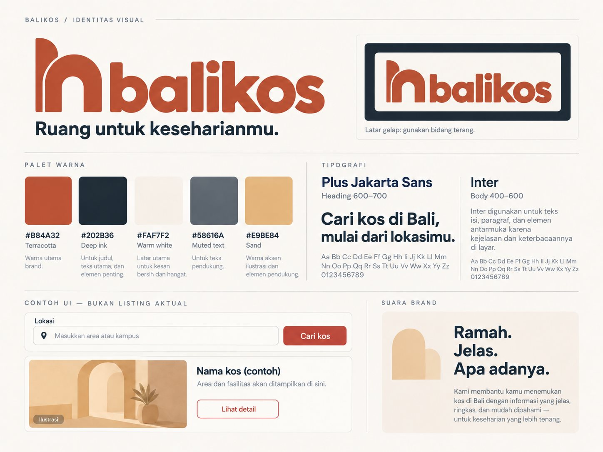

Balikos / Identitas visual
Brand guideline
Ruang untuk keseharianmu. Identitas Balikos memakai simbol pintu terbuka yang menyiratkan huruf b, wordmark huruf kecil, dan warna tanah yang hangat.
Logo, palet, tipografi, dan suara brand ditentukan oleh Codex. Halaman ini merangkumnya untuk implementasi.

Logo
- Di latar Kapur atau Putih, pakai logo langsung. Di latar Tinta atau foto, taruh logo di bidang Kapur dengan padding.
- Ruang bebas minimal seperempat tinggi simbol. Jangan meregangkan, memutar, memberi bayangan, atau mengetik ulang wordmark.
- Lebar minimum logo lengkap 160 px. Di bawah itu, pakai simbol (minimum 32 × 32 px).
Warna
#B84A32Terakota
Primary, CTA, tautan
#963922Terakota pekat
Hover CTA
#202B36Tinta
Judul, teks, latar gelap
#58616ABatu
Teks sekunder
#FAF7F2Kapur
Latar utama
#E9BE84Pasir
Aksen, panel
Pasangan teks dan latar (WCAG AA)
| Teks | Latar | Rasio | Hasil |
|---|---|---|---|
| Tinta | Kapur | 13,46:1 | Lulus |
| Tinta | Putih | 14,38:1 | Lulus |
| Batu | Kapur | 5,90:1 | Lulus |
| Putih | Terakota | 5,17:1 | Lulus |
| Terakota | Kapur | 4,84:1 | Lulus |
| Putih | Terakota pekat | 7,23:1 | Lulus |
| Tinta | Pasir | 8,33:1 | Lulus |
| Terakota | Tinta | 2,78:1 | Jangan dipakai |
Tipografi
Heading · 600–700
Plus Jakarta Sans
Cari kos di Bali, mulai dari lokasimu.
Body & UI · 400–600
Inter
Dipakai untuk isi, label, dan tombol karena jelas dibaca di layar.
Skala: H1 48/32 px, H2 36/28 px, H3 24/22 px, isi 16 px, label 14 px (desktop/HP). Sentence case, paragraf maksimal 65 karakter.
Suara brand
Ramah. Jelas. Apa adanya.
Sapaan “kamu”, sudut pandang “kami”. Utamakan langkah yang bisa dilakukan pengguna. Jangan mengarang harga, ketersediaan, statistik, atau ulasan.
| Gunakan | Hindari |
|---|---|
| Cari kos di Bali, mulai dari lokasimu. | Kos nomor satu dan termurah se-Bali! |
| Tanyakan ketersediaan kamar kepada pemilik. | Kamar pasti tersedia. Buruan booking! |
| Harga belum dicantumkan. Hubungi pemilik untuk informasi lebih lanjut. | Harga spesial hanya hari ini! |